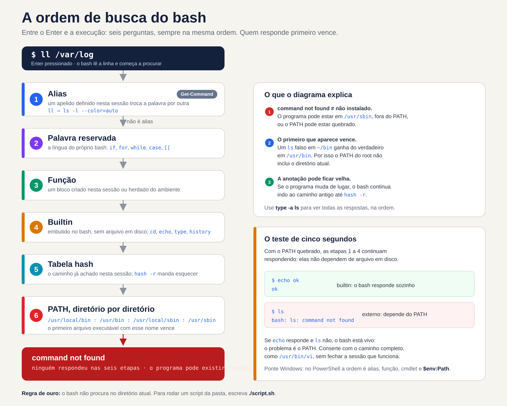
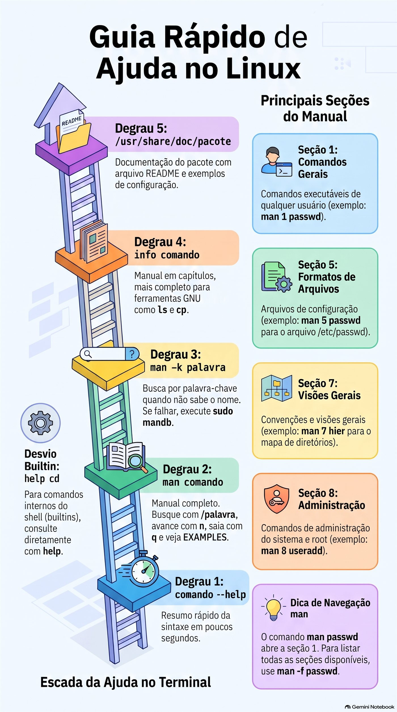
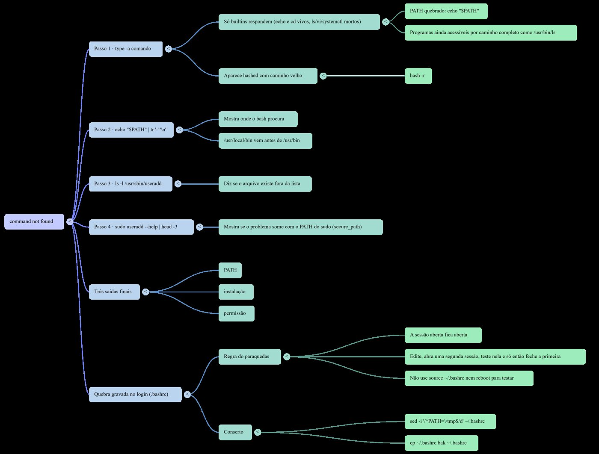

Lezione 1.2 · La shell e l'aiuto
Impara a leggere qualsiasi comando, scopri come bash decide cosa eseguire e inizi a trovare risposte all'interno del sistema stesso, senza Internet, come nel test Red Hat.
| File | lezione 1.2 |
|---|---|
| Modulo | M1 · Riga di comando, lezione 2 di 10 |
| Quando | Settimana 1 |
| Alla fine puoi | Scomporre un comando in nome, opzioni e argomenti; spiegare come bash decide cosa eseguire; diagnosticare un PERCORSO interrotto; trova risposte con man, apropos, info, --help e /usr/share/doc, senza internet; usa la cronologia e le scorciatoie senza pensare |
| Articoli di prova | LE 012.1, 012.2 · LPIC-1 103.1 · RHCSA: trovare e utilizzare la documentazione del sistema |
| Prerequisiti | lezione 1.1 |
| Tempo | Intorno alle 2:30 |
| Istantanee | m1a2-start e m1a2-end in entrambe le VM |
1 · Riscaldamento
Tre domande, a mente fredda, prima di leggere qualsiasi cosa. Scrivi le risposte; la chiave di risposta viene visualizzata alla fine.
- In rocky-lab,
llelenca i file in formato lungo. In Debian-lab rispondebash: ll: command not found. Esiste un programma chiamatoll? - Nel test Red Hat non c'è Internet. È necessario ricordare quali campi ha ciascuna riga di
/etc/passwd. Dove stai cercando? - In debian-lab,
which cdnon risponde affatto, macd /etcfunziona. Dov'è il programmacd?
2 · Perché è importante
Venerdì sera, il server di un cliente. Aggiungi una riga a .bashrc per inserire una nuova directory nel PERCORSO, commetti un errore di carattere, chiudi la sessione e accedi nuovamente. Ora i ls, i vi e anche il sudo rispondono al command not found. Sembra che il sistema sia stato cancellato. Se quella era la tua unica sessione aperta, il resto della notte sarà dedicato alla console remota o ad una visita al cliente.
Con questa lezione riconosci il problema in cinque secondi: echo e cd funzionano ancora, quindi bash è vivo e ha appena perso il PATH. Lo risolvi con il percorso completo, come /usr/bin/vi, e hai un'abitudine che evita gli spaventi: non chiudere mai la sessione che funziona prima di averne testata una nuova.
La seconda metà della lezione riguarda la ricerca di risposte senza Internet. Nel test Red Hat non è presente alcun browser; l'aiuto è all'interno del sistema, nei man, info e /usr/share/doc. Lo stesso vale sul lavoro, per un altro motivo: il manuale installato sul server descrive esattamente la versione che si trova su di esso. La risposta del forum è stata scritta per un'altra distribuzione, un'altra versione, a volte un altro decennio.
3 · Modello mentale
Bash è una receptionist con un elenco fisso di domande.
Quando dici un nome, come ls, lei non lo cerca a caso. Segue sempre lo stesso elenco, nello stesso ordine:
- È un soprannome? Se
llè il soprannome dils -l, cambia nome e continua l'elenco con il suo vero nome. Questo è l'alias. - È una parola della lingua madre, come
ifofor? È una parola riservata. - È qualcuno che è stato presentato in questa sessione, con nome e compito? È una funzione.
- E' qualcuno della reception stessa? Quindi lo risolve senza lasciare il bancone: è un integrato.
- Ho chiamato quel nome oggi? Quindi vai direttamente nella stanza che hai annotato: è la tabella hash.
- In caso contrario, cercare stanza per stanza, nell'ordine dell'elenco PATH.
Chi risponde per primo viene chiamato e la ricerca si ferma lì. Se nessuno risponde, dice di non conoscere nessuno con quel nome: command not found.
Da questo elenco derivano tre conseguenze che utilizzerai durante la tua carriera:
command not foundnon significa che il programma non è installato. Ciò significa che non si trova in nessuna stanza dell'elenco. Potrebbe essere in/usr/sbin, fuori dal tuo PATH, oppure il PATH potrebbe essere interrotto.- Vince il primo che appare. Un
lsfalso in~/binbatte quello vero in/usr/bin, perché~/binviene prima nella lista. Questo è il motivo per cui il PERCORSO di root non include mai la directory corrente. - L'annotazione potrebbe invecchiare. Se il programma cambia stanza, l'addetto alla reception continua ad andare nella vecchia stanza finché qualcuno non le dice di dimenticarla, con
hash -r.


Leggere il diagramma dall'alto al basso: ogni passo viene consultato solo se i precedenti non hanno trovato nulla. Notare l'ultima casella. Con il PERCORSO interrotto, i passaggi da 1 a 4 rispondono comunque, perché non dipendono dal file su disco. È questo indizio che trasforma lo spavento di venerdì sera in una diagnosi di cinque secondi: se echo risponde e ls no, il problema è PATH.
Windows Bridge. PowerShell ha lo stesso receptionist. Get-Command ls risponde che ls è un alias di Get-ChildItem, e l'ordine di ricerca è simile: alias, funzione, cmdlet e, infine, i programmi in $env:Path. Due differenze riguardano quelli provenienti da Windows. Il separatore PATH in Linux è :, non ;. E bash non cerca mai nella directory corrente: in cmd.exe, un script.bat nella cartella corrente viene eseguito direttamente; su Linux, digitare ./script.sh.
4 · Concetto a strati
Essenziale
| Termine | Cos'è | Esempio |
|---|---|---|
| Conchiglia | Il programma che legge ciò che scrivi e gli dice di eseguire | bash, il valore predefinito in Rocky e Debian |
| Comando esterno | Un programma su disco, trovato da PATH | /usr/bin/ls |
| Integrato | Comando integrato nella bash stessa, senza file sul disco | cd, echo, type, history |
| Alias | Soprannome che cambia una parola con un'altra prima di eseguire | ll diventa ls -l --color=auto in Rocky |
| PERCORSO | L'elenco delle directory in cui bash cerca comandi esterni, separate da : | /usr/local/bin:/usr/bin |
| Tabella hash | Memoria di Bash: dove ha trovato ogni comando in questa sessione | hash |
type | Indica quale parola è bash: alias, builtin, file | type -a ls |
--help | Riepilogo delle opzioni, stampato dal comando stesso | ls --help |
man | Il manuale completo, suddiviso in sezioni | man 5 passwd |
apropos o man -k | Cerca una parola nei titoli e nei riassunti del manuale | man -k password |
mandb | Monta l'indice consultato da apropos | sudo mandb |
info | Manuale in capitoli, più completo per gli strumenti GNU | info coreutils |
/usr/share/doc | Documentazione extra sul pacchetto: README, esempi, modifiche | ls /usr/share/doc/sudo |
history | I comandi già immessi, numerati | history 20 |
Anatomia di un comando. Ogni comando che leggerai nella tua vita ha le stesse parti:
ls -lh --sort=time /var/log
│ │ │ └─ argumento: sobre o que o comando age
│ │ └─ opção longa: palavra inteira, dois hífens, pode levar valor
│ └─ opções curtas juntas: -l e -h, um hífen só
└─ nome: o que o bash vai procurar, na ordem do diagramaLe sezioni del manuale che contano.
| Sezione | Contenuto | Esempio |
|---|---|---|
| 1 | Comandi da qualsiasi utente | man 1 passwd: il comando che modifica la password |
| 5 | Formati dei file di configurazione | man 5 passwd: il file /etc/passwd |
| 7 | Panoramica e convenzioni | man 7 hier: la mappa delle directory |
| 8 | Comandi di amministrazione, quasi sempre da root | man 8 useradd |
man passwd apre la prima sezione che ha la pagina 1. Per il file chiedere la sezione: man 5 passwd. In caso di dubbio, man -f passwd li elenca tutti.
La scala dell'aiuto. Quando non lo sai, sali un gradino alla volta:
comando --help: il riepilogo, in secondi.man comando: il manuale completo. Al suo interno si cerca/palavrae Invio,nva all'occorrenza successiva eqesce. Cerca la sezione EXAMPLES.man -k palavra: quando non si conosce nemmeno il nome del comando. Se rispondinothing appropriatel'indice non esiste ancora; eseguiresudo mandb.info comando: il manuale più completo in capitoli per gli strumenti GNU, comelsecp./usr/share/doc/pacote: README, esempi di configurazione e note di distribuzione.
Per i built-in il percorso è diverso: help cd.


Bridge Windows
| Su Windows | Su Linux |
|---|---|
Get-Command ls | type ls |
where.exe notepad | command -v ls o which ls |
Get-Help comando -Full | man comando |
comando /? o -? | comando --help |
$env:Path, separati da ; | $PATH, separati da : |
Get-History, F7 in cmd.exe | history, Ctrl+R |
Approfondimento
Da dove viene il PATH. Quando si accede tramite SSH, bash legge /etc/profile e poi ~/.bash_profile in Rocky o ~/.profile in Debian, che a sua volta carica ~/.bashrc. Ogni file può cambiare il PERCORSO. In Rocky, /etc/profile aggiunge /usr/local/sbin e /usr/sbin anche per gli utenti abituali, e ~/.bashrc mette in primo piano ~/.local/bin e ~/bin. In Debian, il PATH di un utente comune solitamente arriva senza le directory sbin; puoi verificarlo in laboratorio.
Sudo ha il proprio PERCORSO. La riga secure_path di /etc/sudoers definisce dove appare sudo. Pertanto, nello stesso terminale, useradd può far funzionare command not found e sudo useradd.
La manomissione del PATH cancella la memoria. Qualsiasi assegnazione al PATH svuota la tabella hash. Quando PATH si interrompe, nemmeno i comandi che hai appena usato sfuggono.
Salta i passaggi di proposito. \ls ignora l'alias; command ls ignora alias e funzione; /usr/bin/ls salta l'intera ricerca. type -a ls mostra tutti i candidati, nell'ordine in cui bash li troverà.
Non fidarti di which. Conosce solo il PERCORSO. In Debian è uno script che non vede alias o builtin; in Rocky è un alias che cerca prima di leggere i suoi alias. Per scoprire cosa verrà eseguito da bash, utilizzare type; negli script, command -v.
-- chiude le opzioni. Tutto ciò che segue è un argomento, anche se inizia con un trattino: rm -- -arquivo cancella un file chiamato -arquivo.
La cronologia registra tutto. Ogni sessione memorizza i comandi in memoria e scrive in ~/.bash_history all'uscita. La variabile HISTCONTROL decide cosa viene tralasciato: in Rocky, ignoredups scarta le ripetizioni consecutive; in Debian, ignoreboth scarta anche le righe che iniziano con lo spazio. Ecco perché la password non va mai sulla riga di comando: rimane nella cronologia, leggibile.
Cosa c'è nel test
- Linux Essentials: le parti di un comando;
man,info,--helpe/usr/share/doc; le sezioni del manuale;aproposeman -k;type,whichehistory. Le domande sono il riconoscimento: quale sezione, quale comando effettua la ricerca per parola chiave. - LPIC-1 (103.1): PATH,
type,which,historye il file~/.bash_history. Esistono domande di completamento in cui conta il nome esatto del comando o dell'opzione. - RHCSA: un obiettivo intero, trovare e utilizzare la documentazione di sistema con
man,infoe/usr/share/doc. Nel testmanè la tua Internet. La sezione EXAMPLES diman semanage-fcontext, ad esempio, risolve metà di una domanda su SELinux che incontrerai più avanti nel corso. Inizia oggi stesso ad addestrare la ricerca all'interno diman.
5 · Rocky × Debian
La shell è la stessa bash su entrambe le VM, ma ciascuna distribuzione imposta l'ambiente a modo suo. Queste differenze spiegano metà del "funziona sul mio server, non su quello del client":
| laboratorio-roccioso | debian-lab | |
|---|---|---|
| PERCORSO di un utente normale | Include /usr/local/sbin e /usr/sbin, alla fine | Di solito viene fornito senza le directory sbin; verificare al passaggio 3 |
~/bin e ~/.local/bin | Sempre sul PERCORSO, posto da ~/.bashrc | Solo se la directory esiste al momento del login, tramite ~/.profile |
ll | Alias creato in /etc/profile.d/colorls.sh | Non esiste: la riga è commentata in ~/.bashrc |
which | Alias che legge i tuoi alias e le tue funzioni prima di PATH | Script in /usr/bin/which, che esamina solo PATH |
HISTCONTROL | ignoredups | ignoreboth: ignora anche le righe che iniziano con lo spazio |
secure_path di sudo | Include /usr/sbin | Comprende /usr/sbin |
| Manuale per le sezioni 5 e 7 | Pacchetto man-pages, fuori dall'installazione minima | Pacchetto manpages |
| Completare le opzioni con Tab | Pacchetto bash-completion, fuori dall'installazione minima | Pacchetto bash-completion |
| Nome servizio SSH | sshd | ssh; sshd risponde anche come nickname |
| Documentazione di un pacchetto | rpm -qd sudo | ls /usr/share/doc/sudo |
6 · Laboratorio guidato
Aprire tre terminali: uno su rock-lab (ssh rocky-lab), uno su debian-lab (ssh debian-lab) e uno sul nodo Proxmox, per gli snapshot. Ad ogni passaggio, corri, confronta con il risultato atteso e solo dopo leggi il Decidi. Gli output sono frammenti; i numeri e le date saranno diversi sullo schermo.
Every Decide è un vero caso di lavoro. Scegli la lettera prima di guardare la tabella: sbagliare qui, con la spiegazione a lato, è il modo più economico per sbagliare.
Step 1 · Snapshot prima di tutto. Nel nodo Proxmox:
qm snapshot 201 m1a2-inicio --description "Aula 1.2, antes do lab"
qm snapshot 202 m1a2-inicio --description "Aula 1.2, antes do lab"
qm listsnapshot 201Output previsto: l'albero mostra m0a2-fim, m1a1-fim, m1a2-inicio e, infine, current.
Step 2 · Installa l'help. Nel test di Red Hat, il manuale è già installato. Sulle VM minime, alcuni di essi non arrivano. In rocky-lab:
sudo dnf install -y man-db man-pages info bash-completion
sudo mandbIn debian-lab:
sudo apt install -y man-db manpages info bash-completion
sudo mandbCiò che è già installato viene ignorato. mandb assembla l'indice che man -k interroga e l'output termina con il conteggio delle pagine elaborate. Quindi uscire dalle due VM con exit ed entrare di nuovo, per caricare bash-completion.
Passaggio 3 · Leggi il tuo PATH. Prima di eseguire, scommetti: /usr/sbin appare nel PATH di debian-lab? In entrambe le VM:
echo "$PATH" | tr ':' '\n'In rocky-lab, una directory per riga, in questo ordine:
/home/rodrigo/.local/bin
/home/rodrigo/bin
/usr/local/bin
/usr/bin
/usr/local/sbin
/usr/sbinIn debian-lab, qualcosa del tipo:
/usr/local/bin
/usr/bin
/bin
/usr/local/games
/usr/gamesOra, in debian-lab, cerca useradd in tre modi:
command -v useradd
ls -l /usr/sbin/useradd
sudo useradd --help | head -3Se il PATH non ha sbin, il primo non risponde affatto, il secondo mostra che il file esiste e il terzo funziona, perché sudo cerca in secure_path stesso. Se il tuo PATH ha già /usr/sbin, tutti e tre rispondono, e la lezione continua ad applicarsi alle Debian più vecchie che troverai sui client.
Decidi 1 · L'utente aggiunge che è scomparso. Scenario: su un client Debian, loggato come utente normale, esegui useradd --help e ricevi bash: useradd: command not found. Cosa fare?
- A) Reinstallare il pacchetto con
sudo apt install --reinstall passwd. - B) Controllare con
ls -l /usr/sbin/useradded eseguire il comando consudo. - C) Aggiungere la directory corrente al PATH con
PATH=$PATH:.. - D) Concludere che Debian non ha
useradde utilizzareadduser.
Scegliere la lettera prima di guardare la tabella.
| Se hai selezionato | Risultato | Perché |
|---|---|---|
| A | ❌ Sbagliato | Il programma è installato; Semplicemente non è nell'elenco di ricerca. La reinstallazione non modifica il PERCORSO e crea problemi anche con un server di produzione senza motivo. |
| B | ✅ Giusto | command not found significa "non elencato", non "non installato". Il file si trova in /usr/sbin e la creazione di un utente è un'operazione root: sudo si trova già lì. |
| C | ❌ Sbagliato | useradd non si trova nella directory attuale, quindi non cambia nulla. E inserendo . nel PERCORSO si apre la porta a un programma falso con un nome di comando. |
| D | ❌ Sbagliato | useradd esiste in Debian. E adduser è anche in /usr/sbin: darebbe lo stesso errore. |
Da risolvere: l'addetto alla reception cerca solo le stanze presenti nell'elenco. Chiunque sia in un'altra stanza continua a esistere.
Passo 4 · Chiedi a bash qual è il nome di ciascun nome. In entrambe le VM:
type -a ls
type ll
type cd
type if
type -a whichIn rocky-lab, qualcosa come:
ls is aliased to `ls --color=auto'
ls is /usr/bin/ls
ll is aliased to `ls -l --color=auto'
cd is a shell builtin
if is a shell keyword
which is aliased to `(alias; declare -f) | /usr/bin/which --tty-only --read-alias --read-functions --show-tilde --show-dot'
which is /usr/bin/whichIn debian-lab, qualcosa come:
ls is aliased to `ls --color=auto'
ls is /usr/bin/ls
ls is /bin/ls
bash: type: ll: not found
cd is a shell builtin
if is a shell keyword
which is /usr/bin/which
which is /bin/whichTre letture. ll esiste solo dove qualcuno ha creato l'alias. which è qualcosa di diverso in ogni distribuzione. Inoltre, se il PATH di Debian-lab ha /bin, ls appare due volte: è lo stesso file, perché negli attuali sistemi Debian /bin è una scorciatoia per /usr/bin.
Decide 2 · Lo script che funziona nel terminale e fallisce in cron. Scenario: uno script di backup in rocky-lab inizia con #!/bin/bash e ha la riga ll /backup > /tmp/lista.txt. Girato a mano, sul terminale, funziona. Con cron, fallisce con ll: command not found. Perché?
- A) Cron utilizza un PATH breve, senza
/usr/bin. - B) Gli alias esistono solo nelle sessioni interattive; lo script deve utilizzare
ls -l. - C) Cron esegue lo script con
sh, nonbash. - D) L'utente cron non ha il permesso di lettura su
/backup.
Scegli la lettera prima di guardare la tabella.
| Se hai selezionato | Risultato | Perché |
|---|---|---|
| A | ❌ Sbagliato | Il PERCORSO di Cron è breve, ma include /usr/bin. E non c'è nessun file ll da nessuna parte: nessun PATH lo troverebbe. |
| B | ✅ Giusto | ll è un alias creato in /etc/profile.d/colorls.sh, che viene caricato solo nelle sessioni interattive. In uno script, bash non espande nemmeno gli alias. Nello script, scrivi il comando vero. |
| C | ❌ Sbagliato | La prima riga, #!/bin/bash, garantisce bash. E, anche in bash, lo script non espande gli alias. |
| D | ❌ Sbagliato | La mancanza di autorizzazione dà diritto al Permission denied, non al command not found. Leggi il messaggio: ti dice quale passaggio non è riuscito. |
Da sistemare: infatti è conforto per chi scrive. Lo script non scrive.
Passaggio 5 · La memoria bash. In Rocky-Lab:
hash -r
hash
uptime
hash
type uptimeOutput previsto: primo hash: hash table empty; dopo uptime la tabella riporta /usr/bin/uptime con 1 nella colonna hits; e type risponde uptime is hashed (/usr/bin/uptime).
Ora crea un falso uptime in ~/bin, che precede /usr/bin nel PATH:
mkdir -p ~/bin
printf '#!/bin/bash\necho "uptime falso, de ~/bin"\n' > ~/bin/uptime
chmod +x ~/bin/uptime
uptimePrevedi prima di Invio: quale uptime risponde? Quello vero. Bash non ha nemmeno guardato il PERCORSO, perché il percorso era già scritto. Digli di dimenticare:
hash -r
uptimeOra rispondi uptime falso, de ~/bin. Infine, cancella quello falso senza cancellare la tabella:
rm ~/bin/uptime
uptime
hash -r
uptimeIl primo uptime risponde bash: /home/rodrigo/bin/uptime: No such file or directory: bash è andato direttamente nella stanza annotata, ed era vuota. Dopo hash -r ritorna il vero. Salva questo messaggio: un percorso completo per errore, per un programma chiamato solo per nome, è un segno di una vecchia annotazione.
Decidi 3 · La versione che non cambia. Scenario: su un server client, installi la nuova versione di uno strumento di backup in /usr/local/bin. Quello vecchio continua nel /usr/bin. Nella stessa sessione l'opzione --version mostra ancora quella vecchia. Cosa fare?
- A) Reinstallare la nuova versione, perché l'installazione non è riuscita.
- B) Eseguire
typecon il nome dello strumento e, se appare comehashed, cancellarlo conhash -r. - C) Invertire l'ordine del PERCORSO, perché
/usr/local/binviene dopo/usr/bin. - D) Riavvia il server in modo che il sistema riconosce la nuova versione.
Scegliere la lettera prima di guardare la tabella.
| Se hai selezionato | Risultato | Perché |
|---|---|---|
| A | ❌ Sbagliato | L'installazione è andata bene; bash non ha guardato più. La reinstallazione non elimina la nota. |
| B | ✅ Giusto | Bash ha notato il vecchio percorso quando hai utilizzato lo strumento per la prima volta. hash -r cancella le annotazioni; la ricerca successiva attraversa il PATH e trova prima /usr/local/bin. |
| C | ❌ Sbagliato | In Rocky e Debian, /usr/local/bin viene prima di /usr/bin, proprio perché ciò che si installa manualmente batte ciò che proviene dal pacchetto. |
| D | ❌ Sbagliato | Funzionerebbe per caso, perché la nuova sessione inizia senza note. Ma rimuove i servizi del client per qualcosa che un comando risolve. Sarebbe sufficiente uscire e accedere nuovamente a SSH. |
Da risolvere: la vecchia nota manda l'addetto alla reception nella stanza sbagliata. hash -r strappa il notebook.
Passaggio 6 · Il manuale e le sezioni. In entrambe le VM:
ls --help | head -15
man -f passwd
man 5 passwdman -f mostra qualcosa come:
passwd (1) - change user password
passwd (5) - the password fileIn Rocky-Lab, potrebbe apparire anche passwd (1ssl), da OpenSSL. All'interno di man 5 passwd, digitare /shell e Invio: il cursore si posiziona sulla descrizione del campo della shell di login. n passa all'occorrenza successiva e q esce.
Ora un caso di lavoro: un cliente desidera che un tecnico riavvii un servizio senza diventare root. La sintassi è nel sistema stesso:
man 5 sudoersAl suo interno, digitare /^EXAMPLES e Invio. La sezione degli esempi ha linee pronte per essere adattate. Uscire con q.
Infine, cercare senza conoscere il nome del comando:
man -k 'user account'Qualcosa del tipo:
userdel (8) - delete a user account and related files
usermod (8) - modify a user accountSe la risposta è user account: nothing appropriate, l'indice non è stato montato: eseguire sudo mandb e riprovare.
Decidere 4 · Il test senza Internet. Scenario: nel test, una domanda chiede che l'account utente ana scada il 31 dicembre, 2027. Non ricordi il comando. Cosa fare prima?
- A) Apri
man passwde leggi dall'inizio alla fine. - B) Esegui
man -k expir, trova il nome del comando e cerca/expirnel suo manuale. - C) Apri
infoe naviga finché non lo trovi. - D) Prova
--helpin ogni comando che inizia conuser.
Scegli la lettera prima di guardare la tabella.
| Se hai selezionato | Risultato | Perché |
|---|---|---|
| A | ❌ Sbagliato | passwd si occupa della validità della password, non della scadenza dell'account. E leggere un intero manuale richiede minuti che il test non richiede. |
| B | ✅ Giusto | man -k cerca i riepiloghi di tutte le pagine e expir accetta "expire", "expiry" e "expiration". Appare chage e all'interno del suo manuale la ricerca porta all'opzione -E. Due comandi e sei sulla riga giusta. |
| C | ❌ Sbagliato | info è ottimo per gli strumenti GNU, ma non cerca tutti i comandi e i comandi di gestione degli utenti non hanno nemmeno una pagina info. |
| D | ❌ Sbagliato | È un calcio con l'orologio che corre. Potresti anche trovare usermod -e, ma per fortuna. |
Da risolvere: man -k è il motore di ricerca all'interno del server. Funziona solo dopo che mandb ha montato l'indice.
Passaggio 7 · info, aiuto e /usr/share/doc. In entrambe le VM:
info lsSpace va avanti, n va al nodo successivo, u sale di un livello e q esce. info di ls spiega ciascuna opzione in modo più dettagliato rispetto a man. Dopo:
help cd
man cdIn Debian-lab, help cd spiega l'integrato e man cd risponde a No manual entry for cd. In Rocky-Lab, man cd di solito apre una pagina generale dei built-in di bash; help cd resta la via breve. Infine, la documentazione dei pacchetti:
ls /usr/share/doc | wc -l
ls /usr/share/doc/sudoIn rocky-lab, rpm -qd sudo elenca tutti i file di documentazione dei pacchetti, manuali inclusi.
Decidi 5 · Il manuale che non esiste. Scenario: vuoi sapere cosa fa l'opzione -P di cd. In Debian-Lab, man cd risponde a No manual entry for cd. Cosa fare?
- A) Installa i pacchetti manuali finché non viene visualizzata la pagina.
- B) Esegui
help cd. - C) Concludi che
cdnon ha opzioni. - D) Cerca il file
/usr/bin/cdper leggere cosa fa.
Scegli la lettera prima di guardare la tabella.
| Se hai selezionato | Risultato | Perché |
|---|---|---|
| A | ❌ Sbagliato | Esiste un pacchetto con una pagina cd standard POSIX, ma descrive la pagina cd generica, non quella bash. La documentazione giusta è già pronta. |
| B | ✅ Giusto | cd è un builtin: vive all'interno di bash, e bash stessa lo documenta, con help. Ci sono -P e -L. |
| C | ❌ Sbagliato | La mancanza di manuale non è mancanza di opzioni. cd ha -L, -P e altri. |
| D | ❌ Sbagliato | In Debian-Lab non c'è /usr/bin/cd. cd deve essere integrato: un programma esterno cambierebbe la propria directory e terminerebbe, e la tua shell rimarrebbe dov'era. |
Per risolvere: builtin chiede bash, con help.
Passaggio 8 · Cronologia e scorciatoie. In debian-lab:
ls /root
sudo !!Il primo dà Permission denied. !! ripete l'ultimo comando; bash mostra sudo ls /root prima dell'esecuzione. Dopo:
ls -ld /var/log
cd !$
pwd!$ è l'ultimo argomento del comando precedente: cd va a /var/log. Ora tre scorciatoie, solo sulla tastiera:
- Ctrl+R e digita
uptime: bash trova l'ultimo comando con quella parola. Invio esegue; Esc ti consente di modificare prima. - Digita
systemctl status sse premi Tab due volte:sshd.serviceappare in Rocky-Lab essh.servicein Debian-Lab. - Ctrl+A va all'inizio della riga, Ctrl+E alla fine e Ctrl+U cancella tutto prima del cursore.
Infine, HISTCONTROL, in entrambe le VM. La seconda riga inizia con uno spazio:
echo "$HISTCONTROL"
echo teste-com-espaco
history 3In debian-lab, il comando con spazio non appare nella cronologia. In Rocky-Lab, appare.
Decide 6 · La storia come prova. Scenario: un server client ha smesso di inviare e-mail e il client giura che nessuno l'ha cambiato. Esegui history con il tuo utente e non vedi nulla di strano. Cosa concludi?
- A) Nessuno si è mosso; la cronologia lo conferma.
- B)
historymostra solo il tuo utente e potrebbe essere stato modificato; per sapere chi ha fatto cosa, hai bisogno dei log di sistema. - C) Devi solo eseguire
sudo historyper vedere la cronologia di tutti. - D) Basta leggere il
.bash_historydi root, che registra tutto ciò che accade sul server.
Scegli la lettera prima di guardare la tabella.
| Se hai selezionato | Risultato | Perché |
|---|---|---|
| A | ❌ Sbagliato | history mostra solo i comandi dell'utente, provenienti da sessioni già registrate. Ogni tecnico e root ha il proprio. |
| B | ✅ Giusto | La cronologia è un indizio, non una prova: è per utente, viene registrata all'uscita, può essere modificata e, in Debian, ignora le righe precedute da spazi. Chi ha fatto cosa emerge dai registri di sistema, come quelli riportati in sudo nel diario, che imparerai a leggere più avanti nel corso. |
| C | ❌ Sbagliato | history è integrato e sudo esegue solo programmi su disco. La risposta è sudo: history: command not found: ancora una volta l'ordine di ricerca. |
| D | ❌ Sbagliato | Salva solo ciò che è stato inserito come root e solo le sessioni chiuse. Serve come indizio, ma non mostra cosa hanno fatto gli altri utenti con sudo. |
Da risolvere: history è l'agenda di tutti. L'audit è il registro dell'ordinanza.
Il comando non ha trovato il protocollo. Quattro comandi, in questo ordine, su qualsiasi server. L'esempio utilizza useradd; sostituiscilo con il comando corrente:
type -a useradd
echo "$PATH" | tr ':' '\n'
ls -l /usr/sbin/useradd
sudo useradd --help | head -3Il primo chiede a bash cosa sa. Il secondo mostra dove guarda. Il terzo dice se il file esiste al di fuori dell'elenco. Il quarto mostra se il problema scompare con il PATH di sudo. In meno di un minuto, saprai se si tratta di PATH, installazione o autorizzazione.
7 · Interrompi e correggi
Ora interrompi di proposito ciò che realmente blocca maggiormente le sessioni: PATH. Ci sono due pause. Il primo scompare al termine della sessione. Il secondo viene registrato nel file di login e ritorna in ogni nuova sessione. Fai tutto in Rocky-Lab: lo snapshot m1a2-inicio è lì per quello.
Interruzione A · solo in questa sessione
Interruzione. In Rocky-Lab:
PATH=/tmpNessun messaggio. Sembra che non sia cambiato nulla.
Predict. Prima di eseguire ciascuna riga di seguito, dire se funziona. Annota le tue ipotesi.
ls
echo "$PATH"
cd /var/log
type -a ls
sudo ls /root
/usr/bin/ls /tmp
/usr/bin/sudo ls /rootScoprilo. Qualcosa del tipo:
bash: ls: command not found
/tmp
ls is aliased to `ls --color=auto'
bash: sudo: command not foundIl cd non risponde a nulla, perché ha funzionato. Gli ultimi due funzionano: con il percorso completo, bash non ha bisogno di cercare. Quest'ultimo potrà chiedervi la password e solo il sudo troverà il ls attraverso il suo secure_path.
Nota type -a ls. L'alias c'è ancora, ma cambia solo il testo: ls diventa ls --color=auto, e questo ls deve ancora essere trovato nel PATH. E' il diagramma del §3 live. I passaggi all'interno di bash rispondono: alias, builtin e echo stesso. Il passo PATH non trova nulla.
Decide 7 · La sessione senza comandi. Scenario: in una sessione SSH su un server client, dopo aver incollato un blocco di comandi da un tutorial, non funziona nulla: ls, vi e systemctl danno command not found. echo e cd funzionano. Cosa fare prima?
- A) Riavvia il server tramite il pannello dell'hypervisor.
- B) Esegui
echo "$PATH"e, se è sbagliato, correggi il PATH di questa sessione. - C) Reinstalla
coreutils, perché i programmi sono spariti. - D) Chiudi la sessione ed effettua nuovamente l'accesso, senza guardare nulla.
Scegli la lettera prima di guardare la tabella.
| Se hai selezionato | Risultato | Perché |
|---|---|---|
| A | ❌ Sbagliato | Lo risolverei per caso, se la pausa fosse dovuta solo alla seduta. Ma toglie i servizi del cliente e cancella la traccia. Se l'interruzione è in un file di accesso, restituisce lo stesso dopo l'avvio. |
| B | ✅ Giusto | echo e cd vivi con tutto il resto morto è la firma PATH interrotta. echo è integrato, quindi funziona e mostra la causa in pochi secondi. I programmi rimangono accessibili tramite il percorso completo, come /usr/bin/ls. |
| C | ❌ Sbagliato | I programmi sono su disco; bash non sa dove guardare. E anche dnf è un programma: con il PATH interrotto non risponde nemmeno. |
| D | ❌ Sbagliato | Funziona se la pausa fosse solo durante la sessione, ma non lo sai ancora. Se il tutorial ha registrato la modifica in .bashrc, la nuova sessione sarà la stessa. Hai barattato una diagnosi di cinque secondi con un'intuizione. |
Per risolvere: quando rispondono solo i built-in, guardare il PATH prima di ogni altra cosa.
Correggere. Restituire il PATH dal passaggio 3:
PATH=/home/rodrigo/.local/bin:/home/rodrigo/bin:/usr/local/bin:/usr/bin:/usr/local/sbin:/usr/sbinUn altro modo: exit e inserirlo di nuovo. Questa interruzione esisteva solo nella memoria di questa sessione.
Verifica.
hash
ls ~
type -a lshash risponde a hash: hash table empty. L'assegnazione del PATH ha cancellato le annotazioni, come nel §4. Poi ls funziona e type -a mostra l'alias e /usr/bin/ls.
Break B · registrato in login
Questo è il caso da venerdì sera, nel §2. La regola d'oro viene prima del comando: la sessione che hai aperto adesso rimane aperta fino alla fine. È il tuo paracadute.
Break. In Rocky-Lab, nella sessione che è già aperta:
cp ~/.bashrc ~/.bashrc.bak
[ "$(hostname)" = rocky-lab ] && echo 'PATH=/tmp' >> ~/.bashrc
diff ~/.bashrc.bak ~/.bashrcIl diff mostra l'unica differenza tra la copia e il file, qualcosa del tipo:
27a28
> PATH=/tmpSe diff non mostra nulla, non sei in Rocky-Lab. Verificare con hostname. Copiare .bak è la prima abitudine di questa interruzione: prima di modificare un file di accesso, conservarne una copia.
Predict. Aprire un secondo terminale in Windows ed eseguire ssh rocky-lab. Il login funzionerà? Viene visualizzato il messaggio? Cosa funziona lì dentro?
Scoprilo. L'accesso funziona e viene visualizzato il messaggio. SSH non dipende dal tuo PATH: .bashrc viene letto solo da bash, dopo averlo già inserito. All'interno:
ls
echo "$PATH"
vi ~/.bashrc
/usr/bin/diff ~/.bashrc.bak ~/.bashrcQualcosa come:
bash: ls: command not found
/tmp
bash: vi: command not found
27a28
> PATH=/tmpSenza PATH, non si apre nemmeno l'editor. Ma diff con il percorso completo mostra esattamente la linea colpevole.
Correzione. Questa volta, correggila dall'interno della sessione interrotta, per addestrare il caso in cui non è rimasto alcun paracadute:
/usr/bin/sed -i '/^PATH=\/tmp$/d' ~/.bashrc
/usr/bin/diff ~/.bashrc.bak ~/.bashrc
echo "$PATH"Il sed -i cancella dal file la linea che è esattamente PATH=/tmp. diff non mostra nulla, perché i due file sono di nuovo gli stessi. Ma echo mostra ancora /tmp. Il file è fisso, la sessione no: legge il file all'avvio. Uscire con exit.
Nel paracadute la stessa riparazione sarebbe solo sed -i '/^PATH=\/tmp$/d' ~/.bashrc, senza percorso completo. Oppure cp ~/.bashrc.bak ~/.bashrc, che restituisce l'intera copia.
Check. Nel secondo terminale, apri una nuova sessione:
ssh rocky-lab
echo "$PATH" | tr ':' '\n'
ls ~Il percorso del passaggio 3 è tornato. Adesso, e solo adesso, cancella la copia e chiudi il paracadute:
rm ~/.bashrc.bakDecidi 8 · Modifica di venerdì sera. Scenario: tramite SSH, hai appena modificato .bashrc di root su un client server per aggiungere una directory al PATH. Qual è l'ordine corretto per eseguire il test?
- A) Salva, esci e accedi nuovamente per eseguire il test.
- B) Salva, apri una seconda sessione senza chiudere la prima, provala e solo dopo chiudi la prima.
- C) Salva ed esegui
source ~/.bashrcnella stessa sessione. Se non ci sono errori, va bene. - D) Salva e riavvia il server per caricare il nuovo file.
Scegli la lettera prima di guardare la tabella.
| Se hai selezionato | Risultato | Perché |
|---|---|---|
| A | ❌ Sbagliato | Se il cambiamento ha rotto qualcosa, lo scopri dall'esterno, senza una bella seduta per sistemarlo. Qui il login entrerebbe comunque. Con un errore nel sshd_config o nel firewall, nemmeno quello. |
| B | ✅ Giusto | La vecchia sessione memorizza l'ambiente che ha funzionato ed è lì che puoi correggerlo se quello nuovo è danneggiato. Chiudi quello vecchio solo dopo che quello nuovo ha dimostrato che è tutto ok. |
| C | ❌ Sbagliato | Prova nel posto sbagliato: se la linea interrompe il PERCORSO, interrompi la tua unica sessione buona. E source non riproduce un login pulito, perché ciò che era già caricato è ancora lì e nasconde gli errori. |
| D | ❌ Sbagliato | .bashrc viene letto all'avvio della shell, non all'avvio. Il riavvio non testa nulla e interrompe i servizi del client. |
Da risolvere: la sessione aperta è il paracadute. Nessuno toglie il paracadute prima di aver controllato quello nuovo.
E l'istantanea?
Se qualcosa è sfuggito al controllo, torna all'inizio del laboratorio. Nel nodo Proxmox:
qm rollback 201 m1a2-inicio
qm start 201Il rollback annulla tutto dal Passo 1, inclusi i pacchetti di aiuto: ripetere il Passo 2 prima di procedere.
Bonus in Debian
Ripeti l'interruzione A in debian-lab e aggiungi tre test:
PATH=/tmp
/bin/ls /tmp
/usr/bin/ls -ld /bin
/usr/bin/sudo -i/bin/ls funziona così come /usr/bin/ls. Il secondo comando mostra il motivo, qualcosa come lrwxrwxrwx 1 root root 7 ... /bin -> usr/bin: nell'attuale Debian, /bin è una scorciatoia per /usr/bin. Quest'ultimo apre una shell di root con il root PATH, assemblato da zero. Verificare con echo "$PATH".
Questa è l'uscita di emergenza quando il tuo PATH è interrotto e devi sistemare qualcosa nel sistema. Torna indietro con exit e correggi la tua sessione come nella Pausa A, utilizzando il PERCORSO annotato nel passaggio 3, oppure con exit e un nuovo login.
La lezione: un file di login danneggiato non chiude la porta; blocca ciò che fai una volta effettuato l'accesso. Con il percorso completo, correggi comunque tutto. Ma la vera difesa è procedurale: è cambiato qualcosa che incide sull'accesso, prova in una nuova sessione con quella vecchia aperta. Si applica a .bashrc, sshd_config, regole firewall e sudoer.


8 · Trappole
| Sintomo | Causa | Uscita |
|---|---|---|
command not found per un comando che sai è installato | La sua directory non è nel tuo PERCORSO. Questo è il caso di /usr/sbin per gli utenti Debian comuni. | ls -l /usr/sbin/nome per confermare; esegui con sudo o il percorso completo. |
In Debian, dopo su, useradd dà command not found | Da Debian 10 in poi, su senza trattino diventa root, ma mantiene il suo PATH, senza sbin. | su -, che costruisce da zero l'ambiente root. Se l'installazione non ha definito una password di root, su non inserirà nemmeno: utilizzare sudo -i. |
bash: /home/rodrigo/bin/x: No such file or directory per un comando chiamato solo per nome | Vecchia nota nella tabella hash: il file è stato spostato o eliminato. | hash -r |
| Installata la nuova versione e continua a eseguire quella vecchia | La vecchia annotazione, o quella vecchia, si trova in una directory che precede nel PERCORSO. | type -a nome li mostra tutti; hash -r cancella le annotazioni. |
ll: command not found su un server e sull'altro funziona | Gli alias esistono solo dove qualcuno li ha creati. Nello script, l'alias non funziona da nessuna parte. | ls -l. Per tua comodità, crea l'alias nel tuo ~/.bashrc; nello script scrivi il vero comando. |
which punta a un file, ma bash esegue qualcos'altro | which di Debian guarda solo PATH e ignora alias, funzione e built-in. | type -a nome |
man -k risponde nothing appropriate | L'indice manuale non è stato montato. | sudo mandb |
No manual entry for cd | cd è integrato: bash lo documenta. | help cd |
In Rocky, man 5 passwd non trova la pagina | Installazione minima, senza il pacchetto man-pages. | sudo dnf install -y man-pages |
sudo cd /var/lib/mysql dà sudo: cd: command not found | sudo esegue solo programmi su disco. Per questo non esistono built-in come cd e history. | sudo ls /var/lib/mysql per cercare, o sudo -i per una shell di root. |
script.sh: command not found con lo script nella cartella corrente | Bash non cerca mai nella directory corrente, a differenza di cmd.exe. | ./script.sh |
La password inserita nella riga di comando appare in history | Bash scrive tutto. Solo Debian ignora le righe che iniziano con uno spazio. | Non passare mai una password sulla riga di comando. Se è passato, trattalo come trapelato e cambia la password. |
.bashrc cambiato e non è cambiato nulla | Il file viene letto solo all'avvio della shell. | Testare in una nuova sessione, con quella vecchia aperta. |
Ho incollato un tutorial ed è arrivato $: command not found | $ dal prompt del tutorial è stato incollato insieme al comando. | Incolla solo il comando, senza $ davanti. |
9 · Quiz
Rispondi senza guardare la lezione. Le risposte commentate si trovano nella chiave di risposta, alla fine.
- In quale ordine bash cerca il nome digitato?
type lsrisponde als is hashed (/usr/bin/ls). Cosa significa e quando questa risposta ti inganna?- In Debian-Lab, come utente comune,
useradd --helpforniscecommand not found, masudo useradd --helpfunziona. Spiegare in due frasi. - In quale sezione del manuale si trova il formato per
/etc/shadow? Scrivi il comando che apre esattamente questa pagina. - Riempi gli spazi vuoti: per vedere tutti i modi in cui bash comprende
ls, esegui____ -a ls. Per cercare la descrizione nel manuale,man ___ 'user account'. Se la ricerca risponde anothing appropriate, eseguiresudo _____. - Perché
cddeve essere integrato? - Hai eseguito
cat /var/log/securee hai ricevutoPermission denied. Qual è il modo più breve per ripetere il comando consudo? - Hai modificato il
.bashrcdi un server tramite SSH. Descrivi il test sicuro in tre passaggi. - Domanda in stile Linux Essentials, in inglese: Quale comando visualizza la pagina di manuale che descrive il formato del file /etc/passwd?
- A)
man passwd - B)
man 5 passwd - C)
info passwd 5 - D)
help passwd
- A)
10 · Flashcard e colla
| Davanti | Verso |
|---|---|
Cosa significa command not found? | Che il nome non risulta in nessuna fase della ricerca. Ciò non significa che il programma non è installato. |
| ordine di ricerca bash | Alias, parola riservata, funzione, incorporata, tabella hash, PATH. Fermati al primo che trovi. |
| Scopri tutto ciò che un nome può essere | type -a nome |
| Il vecchio comando insiste nell'eseguire | hash -r |
| Visualizza PATH, una directory per riga | echo "$PATH" | tr ':' '\n' |
| Sezioni 1, 5, 7 e 8 del manuale | Comandi; formati di file; panoramiche; comandi di amministrazione |
| Cerca nel manuale la descrizione | man -k palavra, uguale a apropos. Se risulta vuoto, sudo mandb. |
All'interno di man: cerca, avanti, esci | /texto, n, q |
| Aiuto da un integrato | help cd |
| Documentazione extra da un pacchetto | /usr/share/doc/pacote; in Rocky, rpm -qd pacote |
| Ripeti l'ultimo comando con sudo | sudo !! |
| Ultimo argomento del comando precedente | !$ |
| Cronologia delle ricerche | Ctrl+R |
su e su - | Senza trattino, mantiene il tuo PERCORSO. Con un trattino, crea l'ambiente root da zero. |
| Regola di sessione aperta | È cambiato qualcosa che influisce sull'accesso: prova in una nuova sessione con quella vecchia aperta. |
Da sapere a memoria.
type -a useradd
echo "$PATH" | tr ':' '\n'
hash -r
ls --help
man -k 'user account'
man 5 passwd
help cd
sudo !!Da consultare.
man 7 hier
man 5 sudoers
info coreutils
ls /usr/share/doc/sudo
rpm -qd sudo
dpkg -L sudo | grep /usr/share/doc
sudo mandb
history | grep useraddIn man 5 sudoers cercare /^EXAMPLES. rpm -qd viene da Rocky; dpkg -L proviene da Debian.
11 · Checklist dell'output
Controlla solo cosa puoi fare senza guardare la lezione:
- [ ] Spiega in una frase perché
command not foundnon significa "non installato". - [ ] Indica l'ordine di ricerca di bash e controlla ogni passaggio con un comando.
- [ ] Trova la sezione giusta del manuale per una configurazione file.
- [ ] Trova un comando in base alla descrizione, con
man -k. - [ ] Leggi la guida per un builtin.
- [ ] Correggi un PATH interrotto, nella sessione e in
.bashrc, utilizzando il percorso completo. - [ ] Spiega perché la vecchia sessione viene lasciata aperta mentre provi quella nuova.
Chiudi la lezione. Nel Proxmox nodo:
qm snapshot 201 m1a2-fim --description "Aula 1.2 concluída"
qm snapshot 202 m1a2-fim --description "Aula 1.2 concluída"
qm delsnapshot 201 m1a2-inicio
qm delsnapshot 202 m1a2-inicio
qm listsnapshot 201Output previsto: m1a1-fim, poi m1a2-fim e infine current. m1a2-inicio non appare più.
12 · Nella vita reale
Il comando digitato una volta, senza alcun problema reale, scompare in un giorno. Questa sezione esiste perché ciò non accada: una missione al lavoro e una sfida domani, senza guardare la lezione.
Missione al lavoro (a domani, sola lettura). Scegli un vero server Linux da gestire. Inserisci il tuo nome utente ed esegui solo comandi che leggono:
echo "$PATH" | tr ':' '\n'
alias
type -a ll which ls
ls -l ~/.bashrc ~/.profile ~/.bash_profile
grep -n PATH ~/.bashrc ~/.profile ~/.bash_profileAlcuni file potrebbero non esistere; l'errore è parte della risposta. Annota tre risposte nel tuo diario di amministrazione:
- Il PERCORSO di questo server ha
sbin? - Eventuali alias o righe PATH sono stati lasciati da un altro amministratore, non dalla distribuzione?
- Quando è stato modificato l'ultima volta
.bashrc?
E una seconda sfida, la prossima settimana: la prossima volta che cerchi un comando su Google mentre lavori, prova prima --help, man -k e la ricerca con / all'interno di man. Tempo. Se non riesci a trovarlo in tre minuti, vai online e scrivi cosa manca nel tuo diario.
Domani, senza guardare. Mettere da parte da 10 a 15 minuti in debian-lab. Senza aprire questa lezione, solo con --help, man e help:
- Scopri in quale sezione del manuale si trova il formato
/etc/groupe apri la pagina. - Con
man -ktrovare il comando che modifica la shell di login di un utente. - Girare
PATH=/tmp. Senza uscire dalla sessione, elenca/etce riporta il PATH alla normalità. - Scopri se
historyè un programma integrato o un programma e dove si trova l'aiuto.
Suggerimento: se si blocca, le tre domande sono sempre le stesse. Che cos'è? (type). Dov'è l'aiuto? (man -k). Viene da bash? (help).
13 · Con DeepTutor
| Comando | Quando utilizzare |
|---|---|
!quiz 1.2 | Subito dopo il laboratorio: nuove domande in stile test. |
!explica tabela hash do bash | Quando un concetto non è ancora chiuso. |
!feynman ordem de busca do bash | Tu spieghi con le tue parole e lui fa notare i difetti. |
!quebra 1.2 | Una nuova interruzione del PERCORSO, alias o manuale da correggere. |
!cartoes 1.2 | Flashcard in ripetizione distanziata. |
!erro bash: useradd: command not found | Incolla un errore reale e guida la diagnosi. |
!revisao 1.2 | Su D+1, D+3, D+7 e D+21. Insieme: !revisao 1.1 in D+1 e !revisao 0.2 in D+3. |
Risposta commentata
Riscaldamento.
- Non esiste un programma
ll. In Rocky, è un alias creato in/etc/profile.d/colorls.sh. In Debian, la riga dell'alias è commentata in~/.bashrc.type lllo mostra. man 5 passwd. La sezione 5 descrive i formati dei file ed è già sul server, senza Internet.cdè integrato: vive all'interno di bash.whichdi Debian esamina solo il PERCORSO, quindi non trova nulla.type cdrisponde acd is a shell builtine l'aiuto arriva dahelp cd.
Quiz.
- Alias, parola riservata, funzione, incorporata, tabella hash, PATH. Bash si ferma al primo che trova.
- Bash ha già trovato
lsin/usr/bin/lse ha annotato il percorso, quindi non cerca più nel PATH. Inganna quando il file è stato cancellato, spostato o acquisito da un concorrente in una directory che precede nel PERCORSO. L'uscita èhash -r. /usr/sbinnon è nel PATH dell'utente medio, quindi bash non trovauseradd.sudoricerca ilsecure_pathdel/etc/sudoers, che comprende il/usr/sbin.- Sezione 5:
man 5 shadow. type,-kemandb.- Un programma esterno viene eseguito in un processo figlio. Cambierebbe la directory del bambino, finirebbe e la tua shell rimarrebbe dov'era. Solo la bash stessa può modificare la propria directory.
sudo !!. Bash mostra il comando completo prima dell'esecuzione.- Lascia aperta la sessione corrente. Apri una seconda sessione e prova lì. Chiudi il primo solo quando funziona il secondo. Meglio ancora: conserva una copia
.bakprima di apportare modifiche. - Scegli la lettera prima di guardare la tabella.
| Se hai selezionato | Risultato | Perché |
|---|---|---|
| A | ❌ Sbagliato | man apre la prima sezione che trova e la sezione 1 è il comando passwd che modifica la password. |
| B | ✅ Giusto | La sezione 5 riguarda i formati dei file. Ecco dove si trovano i campi /etc/passwd. |
| C | ❌ Sbagliato | info non riceve un numero di sezione del genere. E passwd non ha nemmeno una propria pagina info. |
| D | ❌ Sbagliato | help documenta solo gli incorporati di bash e passwd è un programma. The answer is no help topics match. |
Domani, senza guardare.
man -f groupmostra le sezioni. Il formato è inman 5 group.man -k 'login shell'showschsh. Ancheusermod -slo risolve, come confermi inman 8 usermod./usr/bin/ls /etcfunziona con il percorso completo. Per restituire il PATH, copiare il valore da un'altra sessione conecho "$PATH"e assegnarlo conPATH=, oppure uscire conexite rientrare.type historyrisponde ahistory is a shell builtin. La guida è inhelp history.